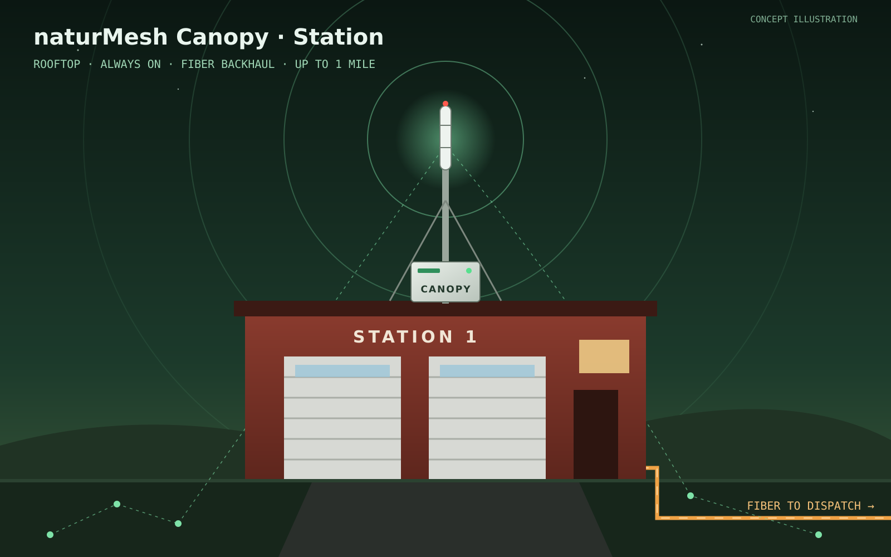

Canopy Station
On the station roof · always on
When using the NaturMesh app, the app itself handles authentication and allows automatic connection to the AP. This AP has a hardwired fiber connection to a site 30+ miles away, so connectivity is ensured.
A station should always be ready for a disaster, and having a Canopy permanently deployed helps with users being educated about available networks, and where to go after a storm or disaster.
- Range
- Up to 1 mile, omnidirectional
- Backhaul
- Hardwired fiber to a site 30+ miles away
- Bandwidth
- More than phones alone, because it’s hardwired